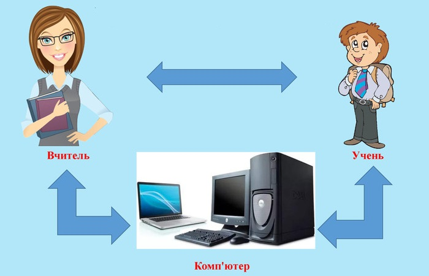

Az informatika tantárgypedagógia (informatika oktatásának módszertana), mint tudomány és mint oktatási tárgy a felsőoktatási intézményben.
Процес навчання – це процес спільної діяльності вчителя та учнів. Обидві сторони – і вчитель і
учень – беруть активну участь у цій діяльності, але кожен по-своєму:
- учитель здійснює навчаючі дії, спрямовуючи навчальні дії учнів;
- учитель мотивує навчальну діяльність учнів. спонукає їх до навчання;
- учитель організовує навчальні дії учнів таким чином, щоб вони давали максимальний ефект. Ця організація проходить на рівні кожного окремого учня;
- учитель дає учням матеріал для засвоєння та орієнтири для їх навчальної діяльності;
- учитель здійснює контроль за ефективністю засвоєння знань.навчаюча діяльність вчителя;
A tanulási folyamat a tanár és a tanulók közös tevékenységének folyamata. Mindkét fél a tanár és
tanuló - aktívan vegyen részt ebben a tevékenységben, de mindenki a maga módján:
- a tanár oktatási tevékenységet végez, irányítja a tanulók oktatási tevékenységét;
- a tanár motiválja a tanulók tanulási tevékenységét. motiválja őket a tanulásra;
- a tanár úgy szervezi meg a tanulók oktatási tevékenységét, hogy azok a maximumot nyújtsák
hatás Ez a szervezés minden egyes tanuló szintjén történik;
- a tanár tananyagot és útmutatást ad a tanulóknak az oktatási tevékenységeikhez
terhek;
- a tanár figyelemmel kíséri az ismeretszerzés eredményességét;
